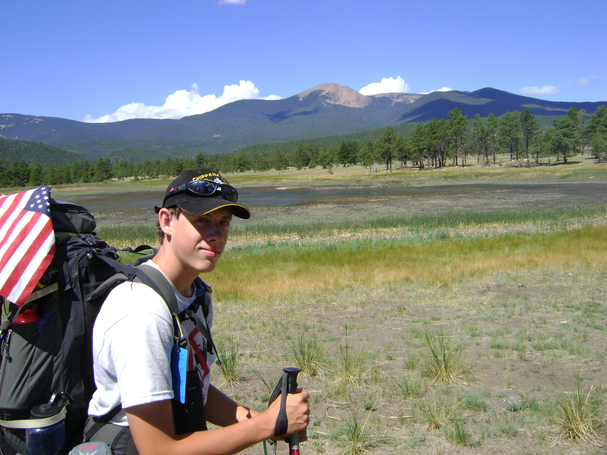

I'm James Green, or Greenjam94. I'm a Media and information student at Michigan State University with a minor in Computer Science. I've been coding since my freshman year at MSU, and I've lost track of all the things that I have done. I'm using a combination of my skills to write these websites to showcase what exactly it is that I have accomplished. Please visit my Dev Blog to learn more about my projects.
This is a good time to mention that my Dev Blog also doubles as my Hacking Blog, In the spring of 2015 there was a class that required me to write a semester long project, so I'll be teaching you to hack using that same blog, just select the hacking category!
Before I came to college, I was really into scouting. I earned the rank of eagle scout my last year of high school. My favorite part of scouts was the high adventure trips, I've climbed over 10 different mountains across the United States. I was also the Senior Patrol Leader ("President") for a year and have many years of leadership experience from past positions. The picture below is from my second trip to Philmont where I was the leader of the trek.

I've been studying martial arts since I was in the third grade. I've earned my second degree black belt in Tang Soo Do while studying at the World Class Institute of Martial Arts. The road to my black belt was harder than I expected. I even quit for three years before returning to prove to myself that I could reach this goal. Now I look back and am proud to see how much I've changed, both physically and mentally.
I have experimented with Tae Kwon Do, Judo, and mixed martial arts (MMA) while studying at MSU. While I haven't been able to train outside of clubs and classes, I have learned a lot in my last three years. MSUMMA was the first place I picked up sparring after every practice. Judo was where I adapted some basic take-down knowledge into precise techniques.
Since I was in middle school, I knew that I wanted to get a job with computers. By the time I was in high school, I narrowed it down to something with programming a computer. It was all the hacking movies and big salary jobs that were being offered. However the only class offered at my high school was a basic web design class that showed us how to make sites with Dreamweaver.
After coming to college, my abilities soared. Thanks to classes, work, and personal projects I can now do so much more. I know specific languages like Python, C++, Java, and more. I've made programs that run in IDEs, web applications, bash, and others. I'm always trying to learn more. Currently web development is taking up most of my time.
My freshman year at MSU, I found a group called "Defense against the dark arts". It was this group that introduced me to BackTrack and Kali Linux. This started me down the path towards network security, pentesting, and hacking. In my sophomore year of school, I installed my first linux box. It's been a slow climb towards my next steps as a hacker, but I'm still doing my best to learn all that I can.
Like my site? Want to know more or are interested in hiring me for your own website? Contact me here
Google "Greenjam94" if you want to see more of my digital footprint